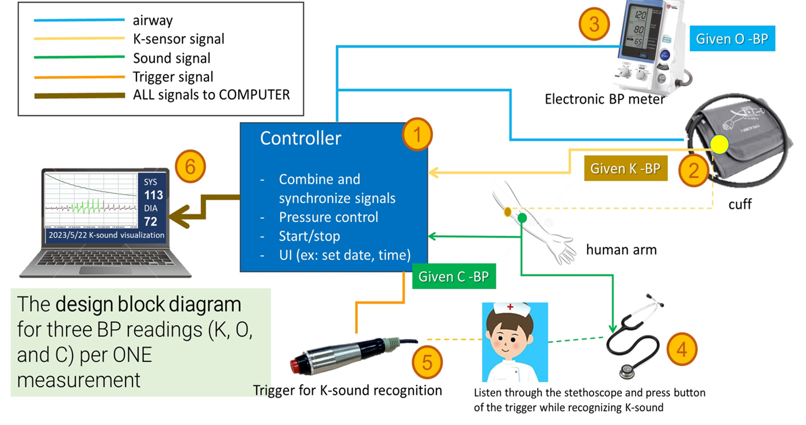
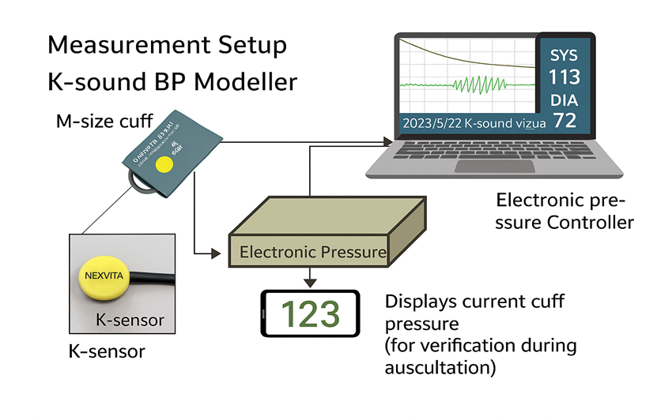
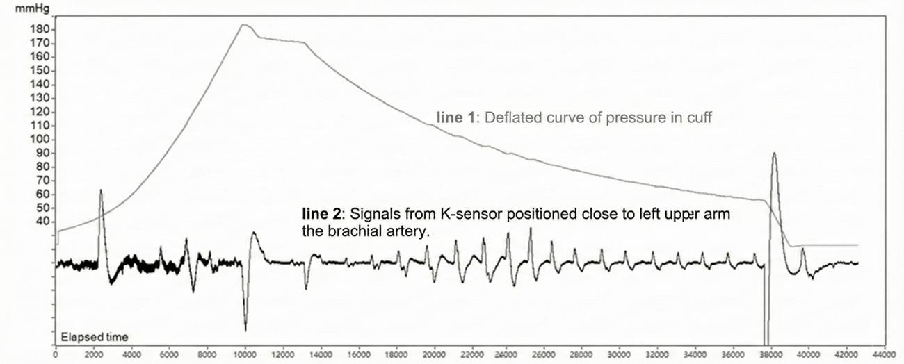
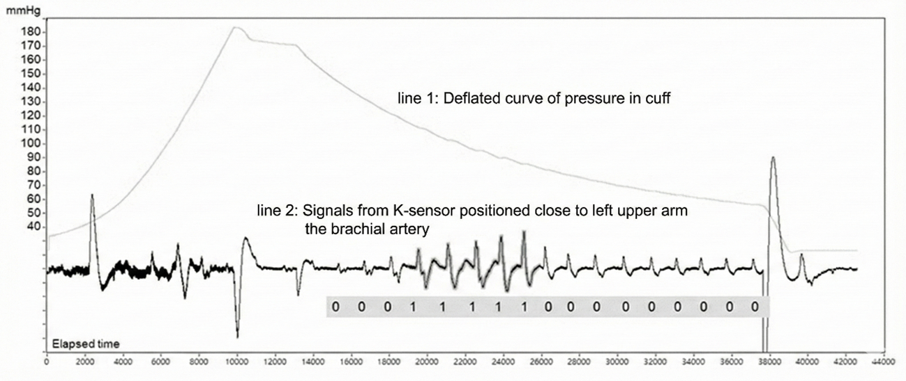
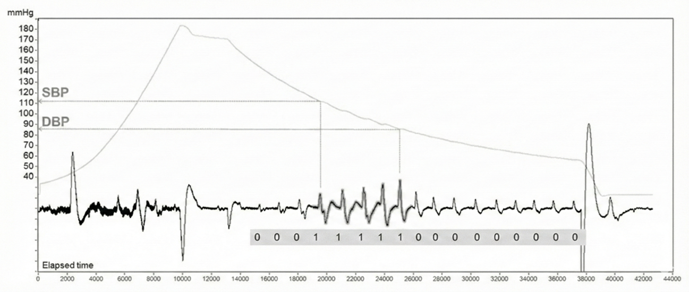
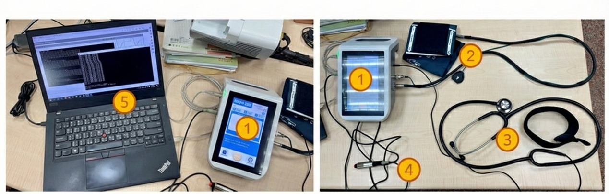

2 Materials and Methods
2.1 Study Design
This single-center, prospective observational study was reviewed and approved by the Institutional Review Board of National Cheng Kung University Hospital (IRB No. A-BR-112-037). The primary objective was to compare blood pressure (BP) measurements obtained using an automated Korotkoff sound BP monitor (Ksens-BP), an oscillometric BP monitor (Oscillo-BP), and the auscultatory method (Auscl-BP) in patients with cardiovascular disease. All participants provided written informed consent prior to study procedures.
Based on a target concordance correlation coefficient (CCC) of 0.80, with the lower bound of the 95% confidence interval set at 0.70 and 80% power, the required sample size was estimated at 170 participants. Considering a potential dropout rate of up to 15%, the recruitment target was set at 200 participants.
2.2 Study Population
Participants were recruited from the cardiovascular outpatient department of National Cheng Kung University Hospital, Douliu Branch, Taiwan, from October 2023 to January 2024. Inclusion criteria were age >= 18 years and at least one of the following conditions:
- Hypertension
- Diabetes mellitus (DM)
- Stroke
- Myocardial infarction (MI)
- Coronary artery disease (CAD) confirmed by coronary angiography or computed tomography with >= 50% stenosis
- Peripheral artery disease (PAD) confirmed by angiography, computed tomography, magnetic resonance imaging, or Doppler ultrasound with >= 50% stenosis
- Atrial fibrillation (AF)
- Heart failure (HF) with left ventricular ejection fraction < 50% or prior hospitalization for pulmonary edema due to HF
Exclusion criteria included upper arm injury or surgery preventing cuff placement, or the presence of an arteriovenous fistula/graft for dialysis.
2.3 Instrumentation and Integrated Measurement Apparatus
To reduce BP variability from sequential measurements, all three modalities (Ksens-BP, Oscillo-BP, and Auscl-BP) were integrated into a single experimental assembly.
2.3.1 Central Controller
A custom-designed controller based on an RL78H1D microcontroller unit controlled cuff inflation/deflation, synchronized signal acquisition, and supported user operations (measurement start, date/time setting, and data review). Signals from the K-Sensor, stethoscope audio, and trigger device were routed to the controller and forwarded to a host computer for real-time computation, visualization, and storage.
2.3.2 K-Sensor
The K-Sensor consisted of a semiconductor piezoresistive strain gauge mounted on a phosphor bronze base plate (approximately 25 mm diameter x 3 mm thickness), enclosed in an aluminum frame, with a biocompatible skin-contacting film. The sensor was embedded directly in a standard upper-arm cuff and positioned over the brachial artery.

2.3.3 Ksens-BP Acquisition
During each automated Ksens-BP measurement, cuff pressure and K-Sensor vibration signals were recorded synchronously. The cuff was inflated to a suprasystolic level and deflated in a controlled manner. A pretrained classification model was applied to the deflation-period K-Sensor waveform to detect Korotkoff-related segments (label 1 for Korotkoff sound present, label 0 for absent). These labels were mapped to the simultaneously recorded cuff-pressure trace. Ksens-SBP was defined at the first segment labeled 1 (onset of Korotkoff sounds), and Ksens-DBP at the last segment labeled 1 (disappearance of Korotkoff sounds). When needed, cuff pressure at these time points was obtained by time alignment and interpolation.



2.3.4 Oscillometric Device Integration
An Omron HEM-907 fully automated oscillometric sphygmomanometer (Omron Healthcare, Kyoto, Japan) was used as the oscillometric comparator. The Omron tubing was connected to the same cuff with embedded K-Sensor to ensure identical cuff pressure conditions. Oscillo-BP values were read from the device after deflation and recorded by research staff.
2.3.5 Auscultatory BP
A standard medical-grade stethoscope diaphragm was positioned over the antecubital fossa and fixed with an elastic strap. The stethoscope acoustic signal was routed through a bifurcated circuit and converted to an electrical signal for controller input. During each measurement, trained healthcare personnel listened to Korotkoff sounds and pressed a handheld trigger button for each detected Korotkoff sound, from first sound (SBP) to last sound (DBP). The host computer automatically recorded Auscl-BP values according to trigger timing and corresponding cuff pressure.
To minimize bias, the auscultating healthcare professional and the host-computer operator were separated. The auscultating professional was blinded to real-time signals and computed BP values.
2.4 Experimental Protocol
All measurements were performed in a quiet, temperature-controlled room, with participants seated and rested for at least 5 minutes before data collection. The sequence was:
- Cuff inflation to 180 mmHg (or higher if baseline BP exceeded this level).
- Controlled deflation at approximately 5 mmHg/s.
- During deflation, simultaneous K-Sensor signal recording and auscultatory trigger marking for Ksens-BP and Auscl-BP derivation.
- After complete deflation, on-screen Oscillo-BP values were recorded.
- Three consecutive measurements per participant with a 1-minute rest interval; failed measurements were repeated, allowing up to five attempts.

2.5 Statistical Analysis
All analyses were performed in R (Version 4.5.2) (R Foundation for Statistical Computing, Vienna, Austria). Continuous variables are presented as mean +/- SD and categorical variables as n (%).
Agreement between devices and the auscultatory reference was evaluated using Lin’s CCC with 95% confidence intervals and Bland-Altman analysis (mean bias and 95% limits of agreement). Method differences were summarized by mean difference, SD, and mean absolute difference, and absolute errors were compared using paired Wilcoxon signed-rank tests.
Factors associated with measurement differences were assessed using linear mixed-effects models with participant-level random intercepts. Subgroup analyses were also performed using mixed-effects models with estimated marginal means.
Oscillo-BP error was analyzed at the attempt level using descriptive comparisons — including standardized mean difference (SMD) to quantify covariate imbalance — and a mixed-effects logistic regression model. Odds ratios with 95% confidence intervals are reported. All tests were two-sided, and p < 0.05 was considered statistically significant.